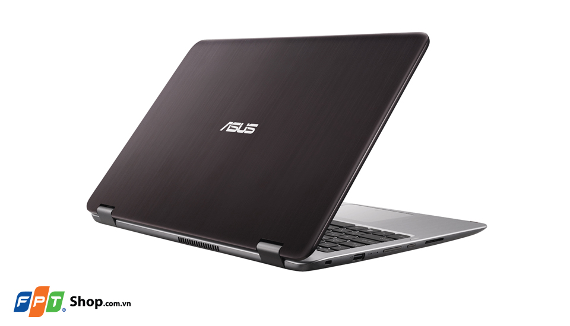
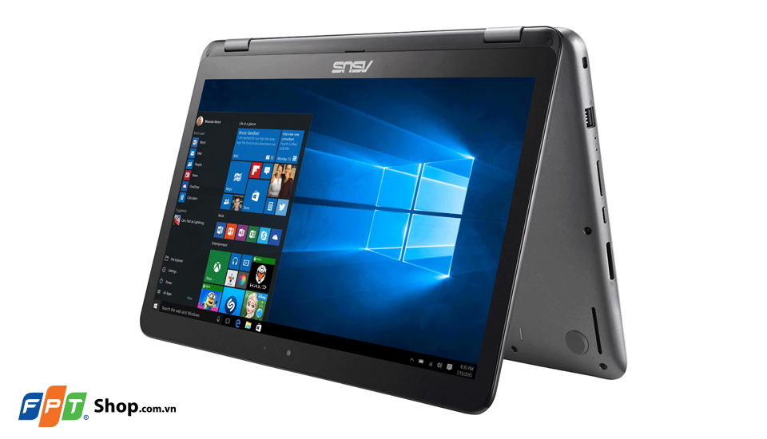
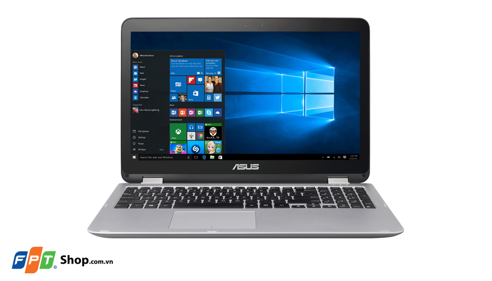
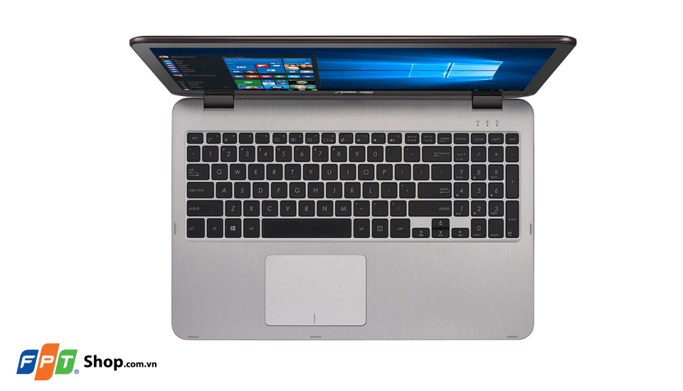
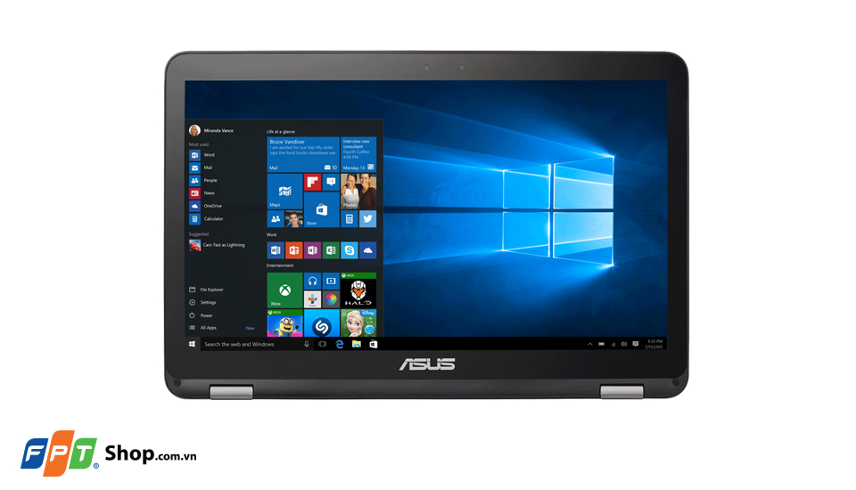

Asus TP501UA-DN094T - Linh hoạt cho cả giải trí và công việc. Máy được thiết kế đẹp mắt, trọng lượng nhẹ, hiệu năng mạnh mẽ, màn hình cảm ứng xoay 360 độ , hứa hẹn sẽ là một lựa chọn thích hợp để sử dụng tại nhà, văn phòng hay mang đi theo bạn khắp mọi nơi.
Thiết kế tinh xảo
Bằng cách tối ưu từng gam cân nặng, Asus đã tạo ra chiếc máy tính TP501UA-DN094T 15.6 inch chỉ với 2.2kg, với kích cỡ mỏng đến 22.5mm Máy được trang bị lớp vỏ kim loại cao cấp tuyệt đẹp, giúp máy luôn hấp dẫn nổi bật.
Màn hình cảm ứng xoay 360 độ
Màn hình Asus TP501UA-DN094T được thiết kế với cảm ứng nhạy cho hồi đáp tức thì mọi thao tác của bạn, kể cả những chuyển động nhẹ nhất trên đầu ngón tay. Màn hình Full HD độ phân giải 1920 x 1080 pixels của máy cho góc nhìn rộng, hình ảnh không bị bợt màu hoặc thiếu tương phản, ngay cả khi bạn nhìn máy từ góc lệch. Ngoài ra, màn hình còn cho phép xoay 360 độ, giúp bạn dễ dàng sử dụng như một chiếc máy tính bảng hoặc đặt dạng giá đỡ xem phim.
Cấu hình mạnh mẽ
Asus TP501UA-DN094T được trang bị bộ vi xử lý Core-i3 6100U của Intel, với xung nhịp 2.3 GHz cho phép máy thực thi tốt mọi tác vụ. Cùng với đó dung lượng RAM 4GB hỗ trợ cho việc mở nhiều website, chạy nhiều ứng dụng và xử lý nhiều công việc cùng lúc. Asus TP501UA-DN094T trang bị ổ cứng dung lượng 500GB cho phép không gian khá thoải mái để cài đặt phần mềm và lưu trữ dữ liệu.
Âm thanh sống động
Hệ thống âm thanh trên Asus TP501UA-DN094T được chăm chút rất kỹ càng bằng việc trang bị công nghệ âm thanh ASUS SonicMaster độc quyền, kết hợp hài hòa giữa phần cứng và phần mềm được hiệu chỉnh cho ra âm thanh chính xác, trong trẻo, âm bass chắc và có độ trầm nhất định.
Cổng USB 3.1 type C mới
Asus TP501UA-DN094T được trang bị đầy đủ các cổng kết nối thông dụng hiện nay bao gồm cổng USB 2.0, cổng USB 3.0 tốc độ cao, jack cắm tai nghe 3.5mm, cổng trình chiếu chất lượng cao HDMI, cổng mạng LAN RJ 45, và chuẩn Wifi 802.11b/g/n. Đặc biệt, máy được trang bị cổng kết nối USB 3.1 Type-C mới nhất, có kích thước nhỏ tốc độ siêu nhanh và cho phép cắm đa chiều.
Windows 10 Home bản quyền
Asus TP501UA-DN094T được cài đặt Windows 10 cho phép bạn làm việc thông minh và mượt mà hơn, với chế độ tự động thay đổi bố cục màn hình Windows tùy thuộc vào cách bạn sử dụng máy ở từng chế độ lật, chắc chắn cho bạn những trải nghiệm hài lòng.